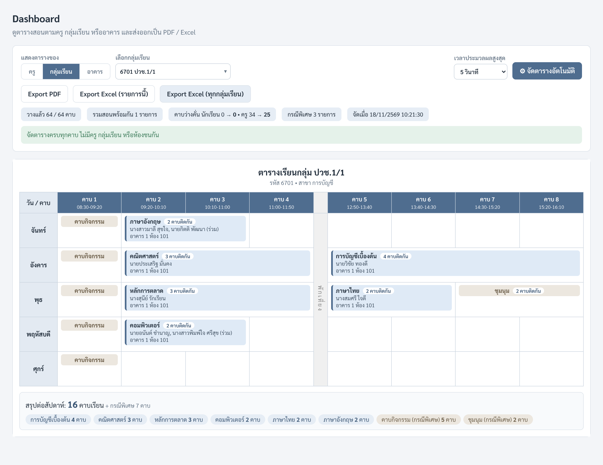
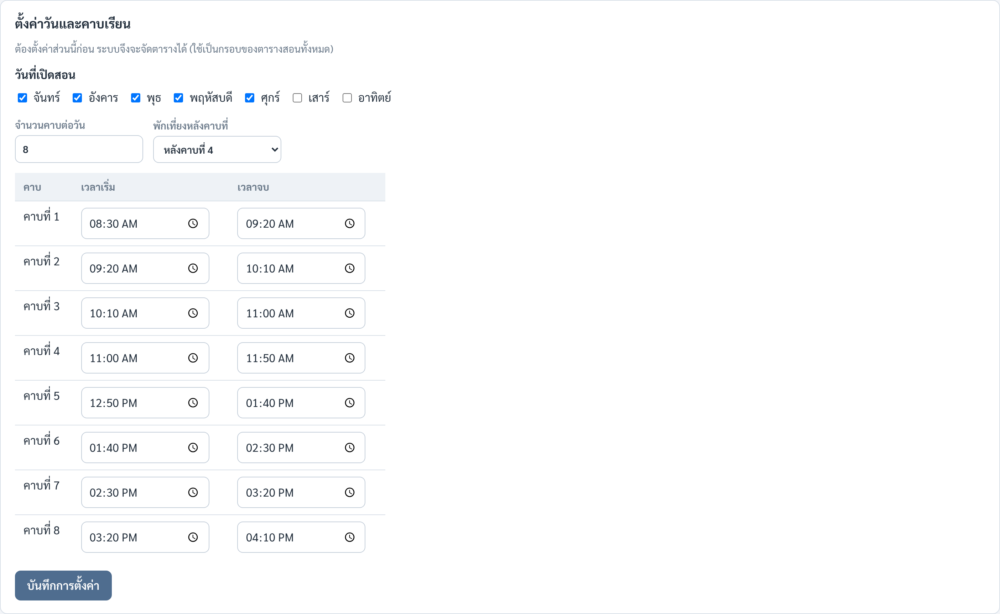
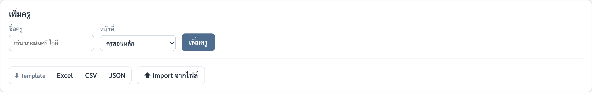
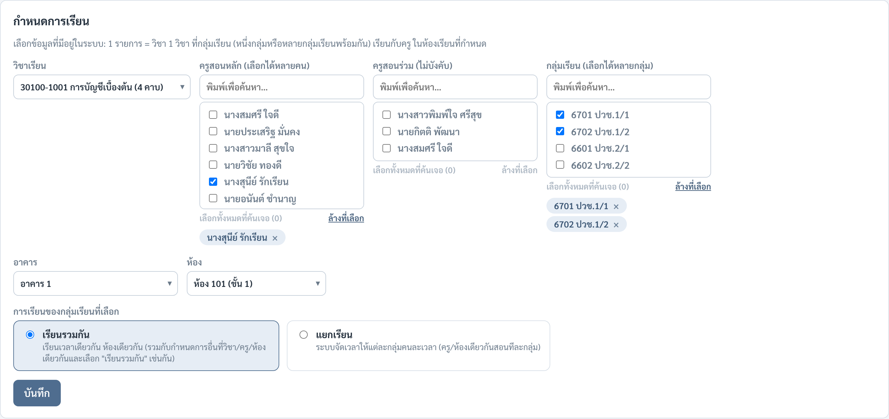
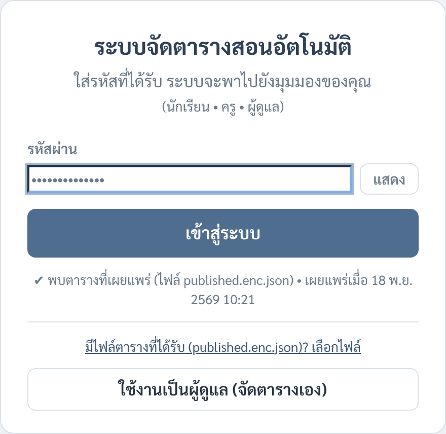
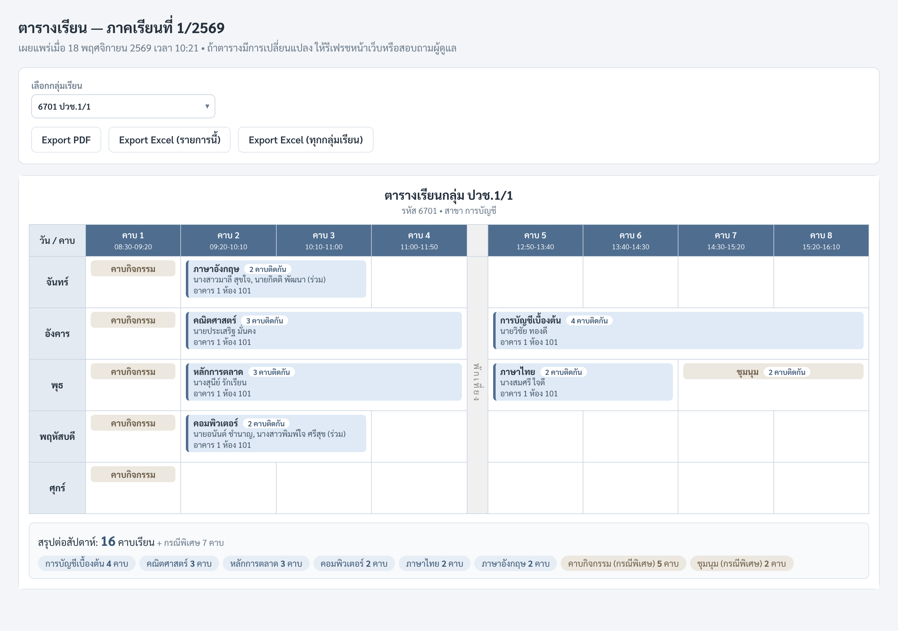

ระบบจัดตารางสอนอัตโนมัติ
คู่มือการใช้งานฉบับย่อ
เวอร์ชัน 1.5
สำหรับผู้ใช้งานทั่วไป
กรอกข้อมูล ครู กลุ่มเรียน วิชา อาคาร แล้วให้ระบบจัดตารางให้โดยอัตโนมัติ ดูผลได้ตาม ครู / กลุ่มเรียน / อาคาร และส่งออกเป็น PDF หรือ Excel ข้อมูลทั้งหมดอยู่ในเบราว์เซอร์ของเครื่องคุณ ไม่ถูกส่งไปที่ใด
เริ่มใช้ใน 4 ขั้นตอน
1ตั้งค่าคาบเรียนวันที่สอน จำนวนคาบ เวลา พักเที่ยง
2กรอกข้อมูลครู กลุ่มเรียน วิชา อาคาร และกรณีพิเศษ
3กำหนดการเรียนเลือกว่า วิชาไหน ใครสอน ใครเรียน ห้องไหน
4จัดตารางDashboard › จัดตารางอัตโนมัติ › Export

หน้า Dashboard — เลือกดูตามครู/กลุ่มเรียน/อาคาร, กดจัดตาราง, Export PDF/Excel, มีสรุปคาบต่อสัปดาห์ใต้ตาราง
เมนูทางซ้ายมี 2 เมนู
Dashboard ดูและส่งออกตาราง
กรอกข้อมูล ตั้งค่าและกรอกข้อมูลทั้งหมด
อยากลองก่อน?
ไปที่ กรอกข้อมูล แล้วกด ข้อมูลตัวอย่าง › เล็ก / กลาง / ใหญ่ จากนั้นไป Dashboard กด "จัดตารางอัตโนมัติ"
ข้อมูลของคุณเป็นของคุณคนเดียว — ควรรู้ 3 เรื่อง
- เก็บเฉพาะในเบราว์เซอร์เครื่องนี้ ไม่ถูกส่งไปที่ใด ผู้ใช้คนอื่นหรือผู้พัฒนาเว็บมองไม่เห็นข้อมูลของคุณ (แต่ละเครื่อง/เบราว์เซอร์แยกกัน และไม่ซิงก์ข้ามเครื่อง)
- สำรองข้อมูลเป็นระยะ: กรอกข้อมูล › สำรองข้อมูล (JSON) ถ้าล้างเบราว์เซอร์หรือเปลี่ยนเครื่อง ข้อมูลจะหาย ไม่มีใครกู้คืนให้ได้ ส่งไฟล์ให้เพื่อนร่วมงานแล้วใช้ กู้คืนข้อมูล เพื่อแชร์ชุดเดียวกัน
- เครื่องใช้ร่วมกัน (เช่น ห้องพักครู): สำรองแล้วกด ล้างข้อมูลทั้งหมด ก่อนเลิกใช้ หรือเปิดหน้าต่างไม่ระบุตัวตน (Incognito)
1ตั้งค่าคาบเรียน กรอกข้อมูล › ตั้งค่าคาบเรียน (ต้องทำก่อน)

- ติ๊กวันที่เปิดสอน (เช่น จันทร์–ศุกร์)
- ใส่จำนวนคาบต่อวัน แล้วกรอกเวลาเริ่ม–จบของแต่ละคาบ
- เลือก พักเที่ยงหลังคาบที่ เท่าไร (ใช้กับคำสั่ง "ช่วงเช้า/ช่วงบ่าย" และการจัดคาบติดกันจะไม่ข้ามพักเที่ยง)
- กด บันทึกการตั้งค่า
2กรอกข้อมูล แท็บ ครู / กลุ่มเรียน / วิชาเรียน / ห้องเรียน
| แท็บ | ต้องกรอก | หมายเหตุ |
|---|
| ครู | ชื่อครู, หน้าที่ (ครูสอนหลัก / ครูสอนร่วม) | ชื่อเดียวกันเพิ่มได้ถ้าคนละหน้าที่ (ถือเป็นคนเดียวกัน) |
| กลุ่มเรียน | รหัสกลุ่มเรียน, ชื่อกลุ่มเรียน, สาขาวิชา | รหัสห้ามซ้ำ |
| วิชาเรียน | รหัสวิชา, ชื่อวิชา, จำนวนคาบต่อสัปดาห์ | รหัสห้ามซ้ำ |
| ห้องเรียน | ชื่ออาคาร, จำนวนชั้น, จำนวนห้อง ต่อชั้น | ชั้น 2 ห้อง 3 = ห้อง 203 |
ทุกรายการมีปุ่ม ลบ ในตารางสรุปด้านล่าง หากกรอกผิด (ถ้าข้อมูลถูกใช้ในกำหนดการเรียน ระบบจะเตือนก่อนลบ)
นำเข้าข้อมูลจากไฟล์ Excel (.xlsx) • CSV • JSON

1กด Template เลือกรูปแบบ Excel / CSV / JSON
2กรอกข้อมูลตามหัวตาราง
3กด Import จากไฟล์ — ระบบตรวจทุกแถว นำเข้าแถวที่ถูก และบอกเลขแถวที่ผิด
ข้อควรระวังเมื่อ Import
- ลำดับ: Import ครู และ กลุ่มเรียน ก่อน แล้วจึงกรณีพิเศษ (เพราะกรณีพิเศษอ้างอิงชื่อครู/รหัสกลุ่ม)
- CSV ภาษาไทย: บันทึกจาก Excel เป็น "CSV UTF-8" (ระบบพยายามแปลงไฟล์เก่า Windows-874 ให้อัตโนมัติ)
- รหัสที่ขึ้นต้นด้วย 0 (เช่น 06701) ให้เก็บเป็นข้อความ ไม่ใช่ตัวเลข; ไฟล์ .xlsx อ่านเฉพาะชีตแรก; ไม่รองรับ .xls เก่า
- ขนาด: ไฟล์ไม่เกิน 5 MB; ชื่อซ้ำจะถูกข้ามและแจ้งในรายงาน
- กำหนดการเรียน ไม่มีไฟล์ Import รายส่วน — ใช้ กู้คืนข้อมูล (ไฟล์ JSON สำรองทั้งชุด) หรือกรอกในหน้าเว็บ
ข้อมูลตัวอย่างสำหรับทดลอง กรอกข้อมูล › ข้อมูลตัวอย่าง (แทนที่ข้อมูลปัจจุบัน)
| ขนาด | กลุ่มเรียน | วิชา | ครู | อาคาร | คาบ/สัปดาห์ | เหมาะสำหรับ |
|---|
| เล็ก | 4 | 6 | 8 | 2 | 64 | ลองฟีเจอร์ทั้งหมดอย่างรวดเร็ว |
| กลาง | 12 | 9 | 23 | 3 | 264 | สถานศึกษาขนาดเล็ก |
| ใหญ่ | 30 | 10 | 54 | 6 | 720 | ทดสอบความเร็วกับข้อมูลมาก |
ในโฟลเดอร์ sample-data/small|medium|large มีไฟล์ Excel / CSV / JSON ของทุกแท็บไว้ทดลอง Import และ dataset.json (ชุดสมบูรณ์รวมกำหนดการเรียน) ใช้ปุ่ม กู้คืนข้อมูล
3กรณีพิเศษ คาบที่ต้องมีเวลาตายตัว เช่น กิจกรรม ชุมนุม ประชุม — ระบบวางก่อนเสมอ
พิมพ์เงื่อนไขเป็นภาษาไทย ระบบแสดงทันทีว่าเข้าใจเป็นอะไร (แถบสีเขียว) ก่อนกดเพิ่ม
| พิมพ์ว่า | ความหมาย |
|---|
ทุกวันคาบที่ 1 | ทุกวัน คาบ 1 |
วันพุธ คาบ 7-8 | พุธ คาบ 7 และ 8 |
จันทร์-ศุกร์ คาบสุดท้าย | คาบสุดท้ายของวัน |
วันศุกร์ ช่วงบ่าย | หลังพักเที่ยงทั้งหมด |
จันทร์ คาบ 1; พุธ คาบ 3 | หลายเงื่อนไข คั่นด้วย ; |
ใช้กับใคร?
- ไม่เลือกอะไรเลย = ทุกกลุ่มเรียนและทุกครู
- เลือก กลุ่มเรียน และ/หรือ ครู = เฉพาะที่เลือก (เช่น ครู A ประชุมทุกวันอังคาร คาบ 1–2)
- ช่องเลือกพิมพ์ค้นหาได้ทุกช่อง
4กำหนดการเรียน 1 รายการ = 1 วิชา ที่กลุ่มเรียนเรียนกับครู ในห้องที่กำหนด

เลือกจากข้อมูลที่มีในระบบ พิมพ์ค้นหาได้ในทุกช่อง ครูและกลุ่มเรียนเลือกได้หลายรายการ
เรียนรวมกัน — กลุ่มที่เลือกเรียนเวลาเดียวกันในห้องเดียวกัน และรวมกับกำหนดการอื่นที่ วิชา/ครู/ห้อง เดียวกัน (ที่เลือก "เรียนรวมกัน") โดยอัตโนมัติ
แยกเรียน — ระบบจัดเวลาให้แต่ละกลุ่มคนละเวลา (ครูและห้องเดียวกันสอนทีละกลุ่ม)
5จัดตารางและดูผล เมนู Dashboard
- เลือก เวลาประมวลผลสูงสุด (5–120 วินาที ค่าเริ่มต้น 15) แล้วกด จัดตารางอัตโนมัติ — ยิ่งให้เวลามาก ตารางยิ่งสวย ระหว่างรันกด หยุดและใช้ผลที่ดีที่สุดตอนนี้ ได้
- เลือกดูตาม ครู / กลุ่มเรียน / อาคาร แล้วเลือกรายการ (พิมพ์ค้นหาได้) ใต้ตารางมี สรุปจำนวนคาบต่อสัปดาห์
- วิชาที่สอนติดกันจะรวมเป็น ช่องเดียว พร้อมป้าย เช่น "4 คาบติดกัน" ช่องสีเทาคือกรณีพิเศษ
- Export PDF (ตารางที่เลือก) และ Export Excel (รายการนี้ หรือทุกกลุ่ม/ครู/อาคาร แยกเป็นชีต) อยู่ที่หน้าเดียวกัน
- หากแก้ข้อมูลภายหลัง ให้กดจัดตารางใหม่ทุกครั้ง
กฎที่ระบบใช้จัดตาราง
| ห้ามชนกันเด็ดขาด | ครู (ชื่อเดียวกันนับเป็นคนเดียว), กลุ่มเรียน, ห้องเรียน จะไม่อยู่ในคาบเดียวกันสองที่ |
| วิชาไม่เกิน 4 คาบ/สัปดาห์ | จัดเป็นช่วงเดียวติดกันในวันเดียว ไม่ข้ามพักเที่ยง (ถ้าทำไม่ได้จริงจะแยกช่วงและแจ้งเตือน) |
| วิชามากกว่า 4 คาบ | กระจายคนละวัน |
| ความสวยของตาราง | ระบบพยายามลดคาบว่างคั่นกลางวันของนักเรียนและครู, ไม่ให้ครูสอนติดกันเกิน 4 คาบ, และกระจายภาระรายวันให้สมดุล (โดยเน้นนักเรียนก่อน) |
แก้ปัญหาที่พบบ่อย
| อาการ | วิธีแก้ |
|---|
| "จัดไม่ได้ N คาบ" | อ่านเหตุผลในกล่องสีแดง เช่น ครูมีช่องว่างไม่พอ → ลดภาระครู/เพิ่มครู, เปลี่ยนห้อง, หรือเพิ่มจำนวนคาบต่อวัน แล้วกดจัดใหม่ (หรือเพิ่มเวลาประมวลผล) |
| ปุ่มจัดตารางกดไม่ได้ | ยังไม่ได้ตั้งค่าคาบเรียน หรือยังไม่มีกำหนดการเรียน |
| Import แล้วแจ้งผิดบางแถว | ดูเลขแถวในรายงาน แก้ไฟล์ แล้ว Import ใหม่ (แถวที่ถูกต้องเข้าระบบแล้ว ชื่อซ้ำจะถูกข้ามเอง) |
| ใส่รหัสแล้วขึ้น "รหัสไม่ถูกต้อง" | เช็กตัวพิมพ์เล็ก/ใหญ่ของรหัสที่ตั้งเอง (รหัสที่ระบบสร้างให้พิมพ์เล็กได้) และถามผู้ดูแลว่าเผยแพร่ตารางใหม่แล้วเปลี่ยนรหัสหรือไม่ |
| เห็นข้อมูลของคนอื่นบนเครื่องร่วม | เครื่องนั้นมีผู้ใช้ก่อนหน้าทิ้งข้อมูลไว้ในเบราว์เซอร์เดียวกัน — สำรองข้อมูลของคุณ แล้วกด ล้างข้อมูลทั้งหมด หรือใช้หน้าต่างไม่ระบุตัวตน |
| ข้อมูลหายหลังเปลี่ยนเครื่อง/ล้างเบราว์เซอร์ | ข้อมูลเก็บในเบราว์เซอร์ — กด สำรองข้อมูล (JSON) เก็บไว้เป็นระยะ และ กู้คืนข้อมูล เมื่อต้องการ |
สำหรับผู้ดูแลระบบ — เปิดโปรแกรม
ถ้าใช้ผ่านเว็บที่เผยแพร่ไว้ ไม่ต้องติดตั้งอะไร เปิดลิงก์ได้เลย ส่วนการใช้ไฟล์ในเครื่อง: ติดตั้ง Node.js (รุ่น LTS) แตกไฟล์ dist แล้วรันในโฟลเดอร์นั้น: npx serve . -l 5173 จากนั้นเปิด http://localhost:5173 (เก็บหน้าต่างคำสั่งไว้ตลอดที่ใช้งาน และใช้ที่อยู่เดิมทุกครั้ง เพื่อให้ข้อมูลเดิมยังอยู่)
6เผยแพร่ตารางให้นักเรียนและครู ใส่รหัสเพื่อดู • ดูและ Export ได้อย่างเดียว แก้ไขไม่ได้
ผู้ดูแลจัดตารางตามปกติ แล้วเผยแพร่เป็น ไฟล์ที่เข้ารหัส นักเรียนและครูเปิดเว็บ ใส่รหัสของตัวเอง ระบบพาไปยังมุมมองที่ตรงกับรหัสนั้นให้อัตโนมัติ
| มุมมอง | รหัสที่ใช้ | เห็นอะไร | แก้ไข | Export |
|---|
| นักเรียน | รหัสนักเรียน | ตารางเรียนรายกลุ่ม เลือกดูห้องไหนก็ได้ (ไม่เห็นข้อมูลครูทั้งหมด/ข้อมูลดิบ) | ไม่ได้ | PDF / Excel ได้ |
| ครู | รหัสครู | ตารางสอนรายครู เลือกดูครูท่านใดก็ได้ | ไม่ได้ | PDF / Excel ได้ |
| ผู้ดูแล | รหัสล็อกผู้ดูแล (ตั้งหรือไม่ตั้งก็ได้) | ทุกอย่าง: Dashboard, กรอกข้อมูล, เผยแพร่ตาราง | ได้ | ได้ |
สำหรับผู้ดูแล เมนู เผยแพร่ตาราง

- จัดตารางให้เรียบร้อยที่ Dashboard
- เมนู เผยแพร่ตาราง › ตั้งชื่อชุดตาราง กด สร้างรหัสให้ ทั้งรหัสนักเรียนและรหัสครู (ต้องไม่เหมือนกัน) › สร้างไฟล์เผยแพร่
- วางไฟล์
published.enc.json ที่โฟลเดอร์ public/published/ แล้ว push ขึ้น GitHub รอ Actions เขียว 1–2 นาที (หรือส่งไฟล์ให้ผู้ดูทางไลน์)
- ส่งลิงก์และรหัส แยกกลุ่ม (ใช้ปุ่ม "คัดลอกข้อความ")
- ตารางเปลี่ยน → เผยแพร่ใหม่ทุกครั้ง
สำหรับนักเรียนและครู


เปิดลิงก์ › ใส่รหัสที่ได้รับ › เลือกกลุ่มเรียน/ครู › ดูตารางหรือกด Export (ได้รหัสแล้วพิมพ์เล็กก็ได้ ถ้าเป็นรหัสที่ระบบสร้างให้)
ข้อควรระวังเรื่องรหัส
- ไฟล์ที่เผยแพร่เปิดสาธารณะแต่เข้ารหัส — รหัสต้องยาวและเดายาก ระบบไม่ยอมรับรหัสสั้น แนะนำให้กด "สร้างรหัสให้"
- ระบบไม่เก็บรหัสที่ตั้ง ลืมแล้วกู้ไม่ได้ ต้องตั้งและเผยแพร่ใหม่ • รหัสเป็นรหัสร่วม ยกเลิกสิทธิ์รายคนไม่ได้ ถ้ารหัสหลุดให้เปลี่ยนรหัสแล้วเผยแพร่ใหม่
- รหัสล็อกผู้ดูแลเป็นเพียง การล็อกหน้าจอบนเครื่องนั้น ไม่ได้เข้ารหัสข้อมูลในเครื่อง ลืมรหัสต้องรีเซ็ตเครื่อง (ข้อมูลในเครื่องถูกลบ) จึงควรสำรองข้อมูล (JSON) เสมอ